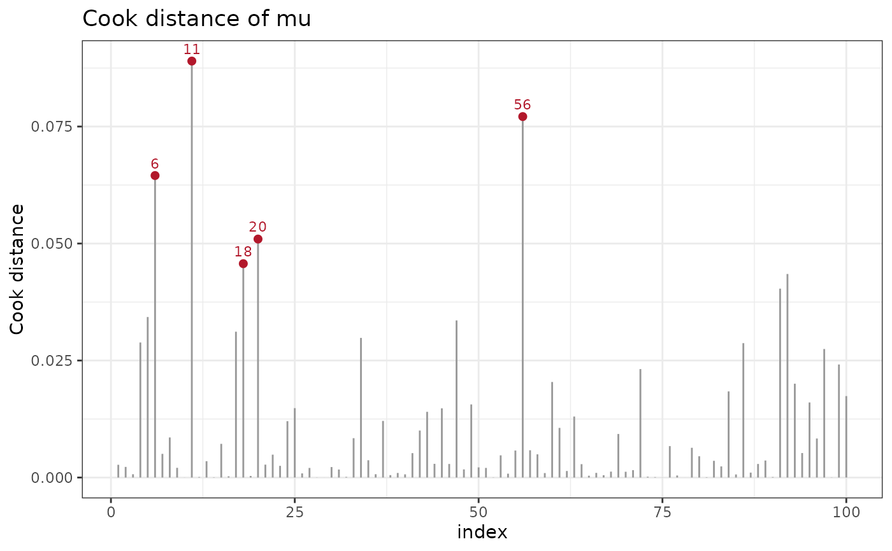
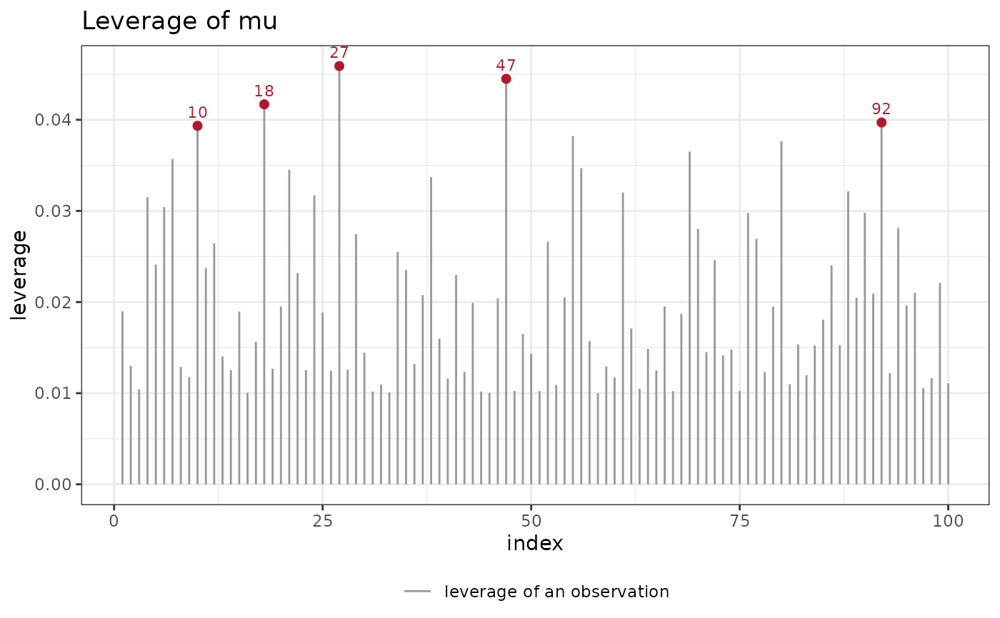

Graph of the Influence of the Observations on an Equation
Source:R/plot_diagnostic.R
plot_influence.RdSelects the graph of a one-step measure of the influence of each observation on the coefficients of one equation: Cook's distance or the leverage. The five largest values are highlighted and labeled with the row number.
Usage
plot_influence(
param,
measure = "cook",
adjust = TRUE,
information = distributions7::expected_info(),
legend = TRUE
)Arguments
- param
The equation, a parameter of the family.
- measure
"cook"(the default) or"leverage".- adjust
Whether to divide the step by \(1 - h_i\).
- information
An object from
distributions7::expected_info()(the default) ordistributions7::observed_info(), the matrix of the variance and of the weights \(w_i\).- legend
Whether to draw the legend that names the elements of the graph.
Value
A PlotInfluence object, inheriting from diagnostic_plot.
Details
Let \(X\) be the design of the equation param, \(s_i\) the
contribution of observation \(i\) to the score of the equation on the
scale of the link, \(w_i\) its information on that scale, and \(V\) the
block of the Bayesian variance (bayesian_vcov()) of the coefficients of
the equation, the inverse of the penalized information \(K\). Deleting
the observation moves the coefficients, to first order, by
$$\Delta_i = V x_i s_i,$$
with \(x_i\) the row of the design. The leverage is
\(h_i = w_i x_i' V x_i\), the diagonal of the hat matrix, and its sum is
the effective number of coefficients \(p_\text{eff}\) of the equation. Cook's
distance is
$$D_i = \Delta_i' K \Delta_i / p_\text{eff}.$$
With adjust = TRUE (the default) \(\Delta_i\) is divided by
\(1 - h_i\), which is the Newton step from the full fit on the
objective without the observation (the information \(K - w_i x_i x_i'\)
by the Sherman-Morrison formula). For a gaussian mean with constant
variance this step is the exact change of the least-squares coefficients,
and \(D_i\) is the Cook distance of stats::cooks.distance() multiplied
by \(\hat s^2/\hat\sigma^2\), the ratio of the residual variance of
lm to the variance of the fit. With adjust = FALSE the step is
\(V x_i s_i\) as stated. The coefficients of random effects and
smooths are part of the equation, and the penalty is part of \(K\).
Examples
set.seed(1)
dd <- data.frame(x = runif(100))
dd$y <- 1 + dd$x + rnorm(100, sd = 0.4)
fit <- statmod(y ~ x, distributions7::gaussian1_distrib(), dd)
ggplot2::autoplot(fit, plot_type = plot_influence(param = "mu"))

ggplot2::autoplot(fit, plot_type = plot_influence(param = "mu",
measure = "leverage"))
